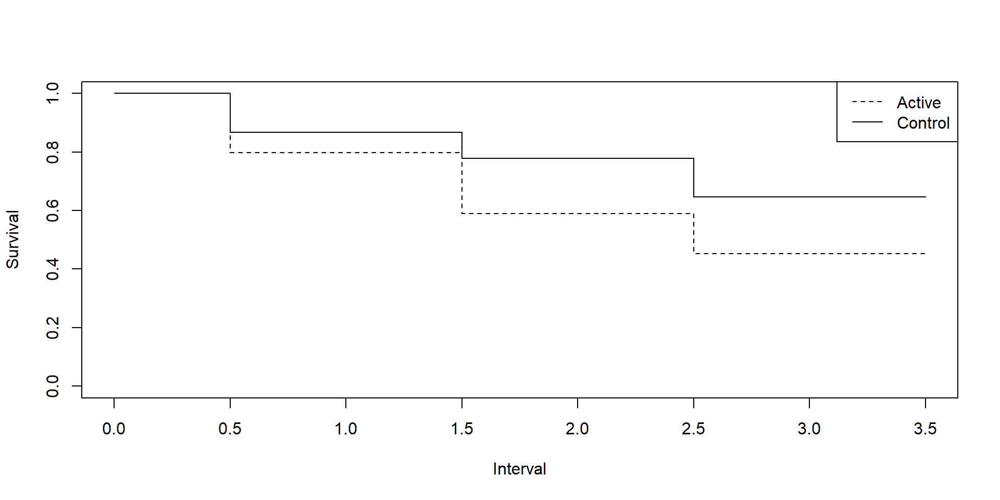
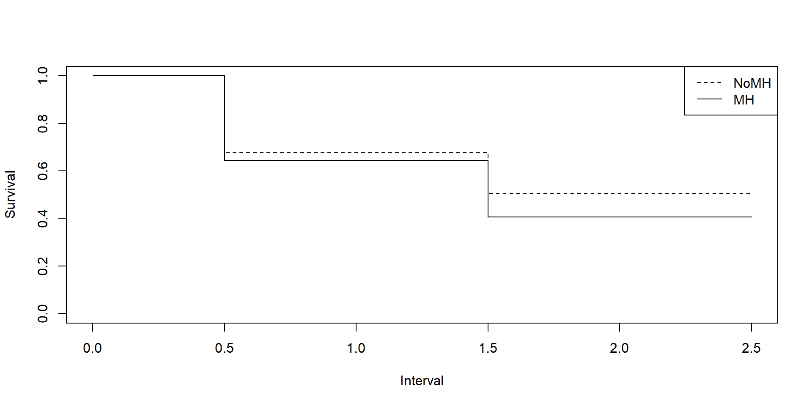

Time-to-event data are generated from time to treatment/exposure until some event as their outcome.
Note
Sometimes, you can only determine the interval of time during which an event occurs. Examples include evaluating animals every four hours after exposure to bacteria and examining patients every half a year for the recurrence of their medical condition.
Data from these studies are referred to as grouped survival data or categorized survival data.
Withdrawals are instances when subjects leave the study before the study ends.
Note
Withdrawals are assumed to be independent of the condition being studied and that multiple withdrawals occur uniformly throughout the interval. After each interval between successive evaluations, the number of withdrawals are also measured.
Important
The survival status of subjects who withdrew is unknown, hence the data ends up being censored.
We are often interested in estimating the survival rates for each method.
Note
The survival rate is the proportion of individuals in a study who have not experienced the event of interest.
The survivor function \(S(y)\), defined to be the probability that the survival time is greater than or equal to \(y\), can be expressed as
\[ S(y) = 1-F(y) = P(Y \geq y) \]
where \(Y\) is the random variable that denotes the continuous lifetime of a subject and \(F(y)\) is the cumulative incidence function.
Note
The cumulative incidence function is defined as the cumulative probability of an event occurring before time \(y\). This function is commonly chosen to be the Weibull distribution, but there are other functions that people can use.
Note
The hazard function expresses the risk or hazard of the event in question occurring at some time \(y\). This function is often referred to as \(h(y)\).
The cumulative hazard function is the cumulative risk of an event occurring by time \(y\). This function is often referred to as \(H(y)\).
The hazard function is related to the survival rate through the following equation:
\[ S(y) = \exp \left(-\int_0^y h(t) dt\right) = \exp [-H(y)] \]
where \(H(y)\) is the cumulative hazard function.
Note
\(H(y)\) is the negative logarithm of the survivor function.
The life table or actuarial method calculates the survival rates by determining the number of subjects at risk for each time interval. The number of subjects with no recurrence for each interval can be counted when the following is known:
Each treatment group will have a life table with the following format:
| Interval | No Events | Events | Withdrawals | At Risk |
Note
While the Kaplan-Meier method is preferable in most cases, the life table method can be used for large data sets and grouped survival data.
Note
Define \(n_{ijk}\) to be the number of patients in the \(i^{th}\) group with the \(j^{th}\) status for the \(k^{th}\) time interval. \(j=0\) corresponds to no recurrence, \(j=1,2\) corresponds to those with recurrence and those withdrawn during the interval, respectively. The interval can take the following values: \(k=1,2,...,t\)
The number of patients in the \(i^{th}\) group who have no recurrence at the \(k^{th}\) interval can be expressed as:
\[ n_{i0k} = n_{i0t} + \sum_{j=1}^2 \sum_{g=k+1}^t n_{ijg} \]
The first term includes those who have no recurrence at time \(t\), while the second term accounts for those with recurrence and withdrawn from \(k+1\) to \(t\) interval.
The life table estimates for the probability of surviving at least \(k\) intervals are computed as:
\[ G_{ik} = \prod_{g=1}^k \frac{n_{i0g} + 0.5n_{i2g}}{n_{i0g} + 0.5n_{i2g} + n_{i1g}} = \prod_{g=1}^k p_{ig} \]
Important
\(p_{ig}\) corresponds to the estimated conditional probability for surviving the \(g^{th}\) interval given that survival of all preceding intervals has occurred.
The term \(0.5n_{i2g}\) accounts for the assumptions that the withdrawals are uniform throughout the interval and that withdrawals are not to have the event at the time of withdrawal.
The corresponding standard error of \(G_{ik}\) is:
\[ se(G_{ik}) = G_{ik} \sqrt{\sum_{g=1}^k \left[\frac{(1-p_{ig})}{n_{i0g} + 0.5 n_{i2g}}\right]} \]
SAS ImplementationThe LIFETEST procedure provides life table analysis for categorized time-to-event data.
Note
LIFETEST calculates survival estimates according to the Kaplan-Meier method by default, so the life table needs to be specified using the method=lt option in the proc lifetest statement.
Shown below is the sample code:
SAS: Comparison across strataSurvival curves are commonly compared across strata (treatment). SAS provides three different tests to test for a difference between the curves across the strata. This is found in the “Test of Equality over Strata” table
The Log-Rank test is a nonparametric tests that require no assumption for the event time distribution. This test is more powerful when the two groups have similar rates of early events, with one having more long-term survivors than the other.
The Wilcoxon test is also a non-parametric test that is more powerful when one group has a tendency to have fewer early events and longer survival times.
The Likelihood Ratio (-2LogLR) test is a parametric test that works best under the assumption that the time distribution is exponential. The LR test is best if there is a linear trend through the origin, indicating consistency with exponential event times.
The Modified Peto-Peto Test can be used when survival curves cross. This test is a variation of the log-rank test that assumes weights that detect earlier event differences. This can be specified in the STRATA statement using test=modpeto.
R ImplementationSurvival analysis in R is geared towards the Kaplan-Meier method compared to life tables. The survival and the KMsurv packages can be used to implement the life table analysis and create Kaplan-Meier curves like SAS with the following caveats:
The data needs to be disaggregated, i.e. we need to use uncount() to get “individual-level” data, to create survival curves from the survfit() function in the survival package.
The event and time variables need to be defined as the following: the time variable should correspond to the mid point of each interval, while the event variable is defined as 1-censor.
The aggregated counts have to be introduced using the lifetab() function in the KMsurv package in R.
The function survdiff() can do a log-rank test and the modified Peto-Peto test.
Warning
R cannot perform the Wilcoxon and LR tests using a specific function in the survival and KMsurv packages.
Investigators were interested in comparing an active and control treatment to prevent the recurrence of a medical condition that had been healed. They applied a diagnostic procedure at the end of the first, second, and third years to determine whether there was a recurrence. Use the life table method to test if there is a difference in survival curves between the active and control treatments.
The variable INTERVAL takes the value 0, 1, 2, or 3, corresponding to the following intervals: <1 Year, 1-2 Year, 2-3 Years, >3 Years (no recurrence at the end of the study). and the variable CENSOR takes the value 1 for censored subjects and 0 otherwise. The variable TREATMENT reflects whether the subjects received the active treatment or acted as controls, and the variable COUNT contains the frequency counts.
library(tidyverse)
medical_counts <- data.frame(
interval = c(0, 0, 1, 1, 2, 2, 3, 0, 0, 1, 1, 2, 2, 3),
treatment = rep(c("control", "active"), each = 7),
censor = c(1, 0, 1, 0, 1, 0, 1, 1, 0, 1, 0, 1, 0, 1),
count = c(9, 15, 7, 13, 6, 7, 17, 9, 12, 3, 7, 4, 10, 45)
)
medical<- medical_counts|>
uncount(weights = count)
medical$time <- medical$interval + 0.5
medical$event <- 1 - medical$censor# A tibble: 2 × 2
treatment sum
<chr> <dbl>
1 active 90
2 control 74Call: survfit(formula = Surv(time, event) ~ treatment, data = medical)
treatment=active
time n.risk n.event survival std.err lower 95% CI upper 95% CI
0.5 90 12 0.867 0.0358 0.799 0.940
1.5 69 7 0.779 0.0450 0.695 0.872
2.5 59 10 0.647 0.0534 0.550 0.760
treatment=control
time n.risk n.event survival std.err lower 95% CI upper 95% CI
0.5 74 15 0.797 0.0467 0.711 0.894
1.5 50 13 0.590 0.0603 0.483 0.721
2.5 30 7 0.452 0.0649 0.341 0.599
null device
1 nsubs nlost nrisk nevent surv pdf hazard se.surv
0-1 74 9 69.5 15 1.0000000 0.2158273 0.2419355 0.00000000
1-2 50 7 46.5 13 0.7841727 0.2192311 0.3250000 0.04934767
2-3 30 6 27.0 7 0.5649416 0.1464663 0.2978723 0.06266907
3-4 17 17 8.5 0 0.4184753 NA NA 0.06652107
se.pdf se.hazard
0-1 0.04934767 0.06200874
1-2 0.05342128 0.08894071
2-3 0.05033961 0.11132948
3-4 NA NA nsubs nlost nrisk nevent surv pdf hazard se.surv
0-1 90 9 85.5 12 1.0000000 0.1403509 0.1509434 0.00000000
1-2 69 3 67.5 7 0.8596491 0.0891488 0.1093750 0.03756515
2-3 59 4 57.0 10 0.7705003 0.1351755 0.1923077 0.04638160
3-4 45 45 22.5 0 0.6353248 NA NA 0.05449140
se.pdf se.hazard
0-1 0.03756515 0.04344933
1-2 0.03213710 0.04127800
2-3 0.03965962 0.06053125
3-4 NA NACall:
survdiff(formula = Surv(time, event) ~ treatment, data = medical,
rho = 0)
N Observed Expected (O-E)^2/E (O-E)^2/V
treatment=active 90 29 37.7 2.00 5.88
treatment=control 74 35 26.3 2.87 5.88
Chisq= 5.9 on 1 degrees of freedom, p= 0.02 Call:
survdiff(formula = Surv(time, event) ~ treatment, data = medical,
rho = 1)
N Observed Expected (O-E)^2/E (O-E)^2/V
treatment=active 90 24.8 32.3 1.76 5.7
treatment=control 74 30.7 23.2 2.45 5.7
Chisq= 5.7 on 1 degrees of freedom, p= 0.02 Based on the survival curves, the log-rank test might be preferred (\(\chi^2\) = 5.88, p=0.015). At a significance level of 0.05, there is sufficient evidence of a difference between the survival curves between the two treatments.
A study about mild traumatic brain injuries (mTBI) investigated the persistence of headaches for those who presented with mental health related sequelae and those who did not. Use the Modified Peto-Peto test and the life table method to test if there is a difference between the survival curves of the two profiles.
The variable INTERVAL takes the value 0, 1, 2, corresponding to the following intervals: <6 months, 6-12 months, >12 months (no occurrence at the end of the study). and the variable CENSOR takes the value 1 for censored subjects and 0 otherwise. The variable PROFILE reflects whether the subjects are part of the group that presented with mental health sequelae (MH) and those that did not (NoMH), and the variable COUNT contains the frequency counts.
interval profile censor count
1 0 NoMH 1 1
2 0 NoMH 0 17
3 1 NoMH 1 6
4 1 NoMH 0 9
5 2 NoMH 1 20
6 0 MH 1 8
7 0 MH 0 15
8 1 MH 1 2
9 1 MH 0 7
10 2 MH 1 10# A tibble: 2 × 2
profile sum
<chr> <dbl>
1 MH 42
2 NoMH 53Call: survfit(formula = Surv(time, event) ~ profile, data = mTBI)
profile=MH
time n.risk n.event survival std.err lower 95% CI upper 95% CI
0.5 42 15 0.643 0.0739 0.513 0.805
1.5 19 7 0.406 0.0851 0.269 0.612
profile=NoMH
time n.risk n.event survival std.err lower 95% CI upper 95% CI
0.5 53 17 0.679 0.0641 0.565 0.817
1.5 35 9 0.505 0.0692 0.386 0.660
nsubs nlost nrisk nevent surv pdf hazard se.surv
0-1 53 1 52.5 17 1.0000000 0.3238095 0.3863636 0.00000000
1-2 35 6 32.0 9 0.6761905 0.1901786 0.3272727 0.06458024
2-3 20 20 10.0 0 0.4860119 NA NA 0.07101373
se.pdf se.hazard
0-1 0.06458024 0.09194179
1-2 0.05673015 0.10762044
2-3 NA NA nsubs nlost nrisk nevent surv pdf hazard se.surv
0-1 42 8 38 15 1.0000000 0.3947368 0.4918033 0.00000000
1-2 19 2 18 7 0.6052632 0.2353801 0.4827586 0.07929287
2-3 10 10 5 0 0.3698830 NA NA 0.08476377
se.pdf se.hazard
0-1 0.07929287 0.1230840
1-2 0.07607697 0.1770703
2-3 NA NACall:
survdiff(formula = Surv(time, event) ~ profile, data = mTBI,
rho = 0)
N Observed Expected (O-E)^2/E (O-E)^2/V
profile=MH 42 22 19.8 0.250 0.625
profile=NoMH 53 26 28.2 0.175 0.625
Chisq= 0.6 on 1 degrees of freedom, p= 0.4 Call:
survdiff(formula = Surv(time, event) ~ profile, data = mTBI,
rho = 1)
N Observed Expected (O-E)^2/E (O-E)^2/V
profile=MH 42 19.6 17.9 0.174 0.482
profile=NoMH 53 23.0 24.7 0.125 0.482
Chisq= 0.5 on 1 degrees of freedom, p= 0.5 There is insufficient evidence of a difference between the survival curves of the two groups based on the modified Peto-Peto test (\(\chi^2\) = 0.5012, p=0.48) and the Wilcoxon test (\(\chi^2\) = 0.4339, p=0.51) .
The Mantel-Cox test tests the null hypothesis that the survival rates are the same across the groups. The Mantel-Haenszel methodology was extended to survival data by formatting the frequencies as a set of 2x2 life tables and using the Mantel-Haenszel computations for these sets of tables.
Important
The treatment/groups define the rows, recurrence status define the columns, and intervals are the strata, under the assumption that the time interval results are uncorrelated. Withdrawals are grouped with the no recurrence group or eliminated entirely.
Note
The Mantel-Cox test for grouped data is equivalent to the log-rank test for comparing survival curves for ungrouped data.
Investigators were interested in comparing an active and control treatment to prevent the recurrence of a medical condition that had been healed. They applied a diagnostic procedure at the end of the first, second, and third years to determine whether there was a recurrence. Use the Mantel-Cox method to test if there is a difference in survival rates between the active and control treatments.
The data set excludes censored data.
data medical_mc;
input time $ treatment $ status $ count @@;
datalines;
0-1 control recur 15 0-1 control not 50
0-1 active recur 12 0-1 active not 69
1-2 control recur 13 1-2 control not 30
1-2 active recur 7 1-2 active not 59
2-3 control recur 7 2-3 control not 17
2-3 active recur 10 2-3 active not 45
;medical_mc <- data.frame(
time = c("0-1", "0-1", "0-1", "0-1", "1-2", "1-2", "1-2", "1-2", "2-3", "2-3", "2-3", "2-3"),
treatment = c("control", "control", "active", "active", "control", "control", "active", "active", "control", "control", "active", "active"),
status = c("recur", "not", "recur", "not", "recur", "not", "recur", "not", "recur", "not", "recur", "not"),
count = c(15, 50, 12, 69, 13, 30, 7, 59, 7, 17, 10, 45)
), , time = 0-1
status
treatment not recur
active 69 12
control 50 15
, , time = 1-2
status
treatment not recur
active 59 7
control 30 13
, , time = 2-3
status
treatment not recur
active 45 10
control 17 7Cochran-Mantel-Haenszel Statistics for treatment by status
Overall tests, controlling for all strata
AltHypothesis Chisq Df Prob
cor Nonzero correlation 8.0294 1 0.0046024
rmeans Row mean scores differ 8.0294 1 0.0046024
cmeans Col mean scores differ 8.0294 1 0.0046024
general General association 8.0294 1 0.0046024The Cochran-Mantel-Haenszel test shows sufficient evidence of a treatment effect on survival rates (Q=8.03,p=0.0046).
Note
If the withdrawals were grouped with no recurrences, the results will be identical to the log-rank test in the previous example
A study about mild traumatic brain injuries (mTBI) investigated the persistence of headaches for those who presented with mental health related sequelae and those who did not. Use the Mantel-Cox method to test if there is a difference in survival rates between the the two profiles.
, , time = 0-6
status
profile not recur
MH 19 15
NoMH 35 17
, , time = 6-12
status
profile not recur
MH 10 7
NoMH 20 9Cochran-Mantel-Haenszel Statistics for profile by status
Overall tests, controlling for all strata
AltHypothesis Chisq Df Prob
cor Nonzero correlation 1.6072 1 0.20489
rmeans Row mean scores differ 1.6072 1 0.20489
cmeans Col mean scores differ 1.6072 1 0.20489
general General association 1.6072 1 0.20489There is insufficient evidence of a difference between the survival rates of the two groups based on the Mantel-Cox test (\(Q\) = 1.6072, p=0.20).
Grouped survival data can be analyzed by providing a description of the pattern of event rates.
Note
The piecewise exponential model assumes that withdrawals are uniformly distributed during the time intervals in which they occur and unrelated to treatment failures. The within-interval probabilities of treatment failures are also assumed to be small and have independent exponential distributions.
The piecewise exponential likelihood can be written as:
\[ \Phi_{PE} = \prod_i \prod_k \lambda_{ik}^{n_i1k} \left[\exp (-\lambda_{ik}N_{ik})\right] \]
where \(n_{i1k}\) is the number of failures of group \(i\) during the interval \(k\), \(N_{ik}\) is the person-months of exposure, and \(\lambda_{ik}\) is the hazard parameter.
Important
The piecewise exponential model assumes independent exponential distributions with hazard parameters \(\lambda_{ik}\) for the respective time periods.
\(N_{ik}\) is computed as
\[ N_{ik} = a_k(n_{i0k} + 0.5n_{i1k} + 0.5n_{i2k}) \]
where \(a_k\) is the length of the interval \(k\). The conditional Poisson distribution of the number of failures/deaths conditioned on the exposure level also follows a Poisson likelihood.
Note
Since the likelihoods are proportional, whatever maximizes the conditional likelihood also maximizes the piecewise exponential likelihood.
We can specify a model for the hazard parameter \(\lambda_{ik}\) such that
\[ \log \lambda_{ik} = \alpha + \eta_k + \beta_1X_{1i} + \beta_2 X_{2i} +... \]
Note
This is similar to the proportional hazards model.
R ImplementationBoth LOGISTIC and GENMOD can implement the piecewise exponential model analyses.
Important
The GENMOD procedure uses the Poisson likelihood to estimate failure rates, while LOGISTIC uses the response failure/trials. When using LOGISTIC, you need to rescale the exposure factor by a large number (at least 10,000 depending on the exposure variable) to scale the exposure from aggregate to individual.
R ImplementationThe glm() function can implement the piecewise exponential model analyses. The Poisson (family=“Poisson”) is used to approximate the incidence rates, while the offset is commonly taken as the logarithm of the observation time.
The data includes information pertaining to the experience of patients undergoing treatment for duodenal ulcers. types of surgeries was randomly assigned: vagotomy and drainage or antrectomy (VDA), or vagotomy and hemigastrectomy (VH). The patients were evaluated at 6 months, 24 months, and 60 months. Use the piecewise exponential model to test for a treatment effect and if there is a difference in failure rates in time.
Call:
glm(formula = failure ~ time + treatment, family = "poisson",
data = vda, offset = log(months))
Coefficients:
Estimate Std. Error z value Pr(>|z|)
(Intercept) -5.0093 0.1818 -27.546 < 2e-16 ***
time7-24 -0.8847 0.2414 -3.665 0.000247 ***
time25-60 -1.0429 0.2223 -4.691 2.72e-06 ***
treatmentvh -0.8071 0.2273 -3.551 0.000384 ***
---
Signif. codes: 0 '***' 0.001 '**' 0.01 '*' 0.05 '.' 0.1 ' ' 1
(Dispersion parameter for poisson family taken to be 1)
Null deviance: 37.3229 on 5 degrees of freedom
Residual deviance: 2.5529 on 2 degrees of freedom
AIC: 38.182
Number of Fisher Scoring iterations: 4 treatment time rate SE df asymp.LCL asymp.UCL
vda 0-6 0.00668 0.001210 Inf 0.004674 0.00953
vh 0-6 0.00298 0.000761 Inf 0.001805 0.00492
vda 7-24 0.00276 0.000468 Inf 0.001975 0.00385
vh 7-24 0.00123 0.000303 Inf 0.000758 0.00199
vda 25-60 0.00235 0.000335 Inf 0.001780 0.00311
vh 25-60 0.00105 0.000238 Inf 0.000673 0.00164
Confidence level used: 0.95
Intervals are back-transformed from the log scale From the GENMOD results, the failure rates for the VDA treatment decreases across time. (\(\beta\) = -0.88,-1.04; p = <0.0001, 0.0002) The failure rate is higher for VDA compared to VH (\(\beta\)=0.8071, p=0.004)
The failure rates can be estimated using the estimate statement.The failure rate of VDA at 25-60 months is 0.0024 (0.0018,0.0031), while VH has a failure rate of 0.0010 (0.0007,0.0016).
Chapter 13- Back to home